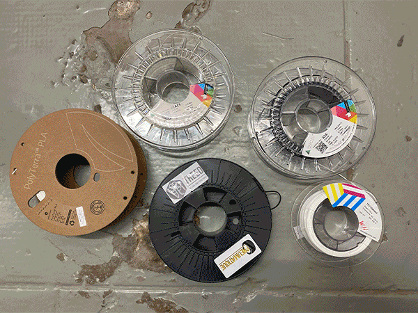
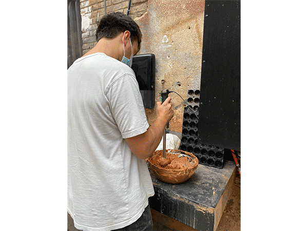
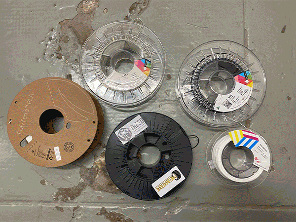
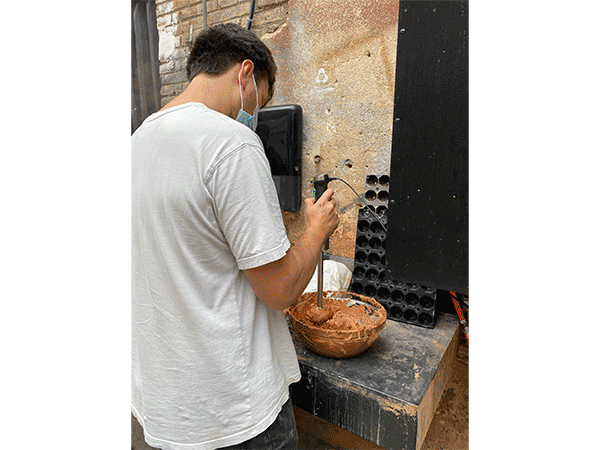

🗓 Week 5 / 23 February 2022
We touched upon the topic of patents and explored the ways they are both good and bad for makers and the industry. While they give opportunities for funding and development of new techniques, they also limit the growth of technology. It's interetsing to learn about the variations of "openness" of knowledge and tools that allow for different situations. And how much the intention of the creator influences not only design decisions but also the rights and actions.
Benefits of additive manufacturing:

Eduard from Fab Academy and I tested out 3D scanning using the X-box kinnect. We scanned a tinned robot that was sitting on the shelf of the Fab Academy room, and placed it on a white piece of paper. Although the textures of the graphics (output) were very bumpy and collag-y, the scanning abilities were quite impressive. I think the texture didn't bother me as much, because I don't have many other 3D scanning references to compare to, and I didn't expect it to look high-quality. The 3D scanning was appealing to me because it has the potential to be portable. I thought of some ideas to scan spaces and objects around the neighborhood.

Assignment: I wanted to 3D print a prototype of a drawing tool that I can use with existing tools like markers, brushes, and sumi-ink tubes. Starting with an idea of a simple modular design that could expand, I sketched some tools that could be used to hold multiple markers or brushes. I also had an idea of a cap attachment to the sum-ink bottle that had different configurations of openings and would make different outputs. This one was a bit more complicated, because I had to create the twisty part inside the bottle cap to match the ones on the bottle. So I decided to print a premade file from thingiverse as a test to see if the fit was right. Then I could modify and model the additional parts from the premade caps.
The process of 3D printing went smoothly. Dafni helped me set up my file on Cura to optimize the settings for printing. The file took around 30minutes to print. After I saw the result, I noticed that I could have loosened the fill of the piece to make it more flexible. Next time, I will create more variables for a single print so I can have more test options.

Joaquin and I experimented printing with clay using the 3D paste printer. The initial clay mixture was inconsistent and made it difficult to print. We blended the clay with more water and made a more fluid consistency and it worked out a lot better. The consistency of the clay was difficult to nail down. This one was printing fine, but by the time it was an inch high, started warping and slowly collapsed. For the next round, we will soak the clay in water for a few days and then blend it so we can make a smoother and more controlled consistency. It was a good experiment, but the cleaning of the machine and tools took about twice as long as the printing.

3D Printing & Scanning
We learned that 3D printing is an additive manufacturing technique, and despite its name, it's not technically printing in three-dimensions, but rather layering 2D planes to create a 3D form. I was surprised to learn that the first 3D printing technique was patented as learly as 1983. Due to the patent, the technology was kept behind hidden doors until 2005, when the patent expired and Andrian Bowter took figured out how to use the technology to build more machines (using machine to build create machines).We touched upon the topic of patents and explored the ways they are both good and bad for makers and the industry. While they give opportunities for funding and development of new techniques, they also limit the growth of technology. It's interetsing to learn about the variations of "openness" of knowledge and tools that allow for different situations. And how much the intention of the creator influences not only design decisions but also the rights and actions.
Benefits of additive manufacturing:
- Minimal waste
- Cost of material operation is low
- Fast and easy to use
- Complexity and freedom of design
- Good for prototypes, short term applications, mass customization

Eduard from Fab Academy and I tested out 3D scanning using the X-box kinnect. We scanned a tinned robot that was sitting on the shelf of the Fab Academy room, and placed it on a white piece of paper. Although the textures of the graphics (output) were very bumpy and collag-y, the scanning abilities were quite impressive. I think the texture didn't bother me as much, because I don't have many other 3D scanning references to compare to, and I didn't expect it to look high-quality. The 3D scanning was appealing to me because it has the potential to be portable. I thought of some ideas to scan spaces and objects around the neighborhood.
Assignment: I wanted to 3D print a prototype of a drawing tool that I can use with existing tools like markers, brushes, and sumi-ink tubes. Starting with an idea of a simple modular design that could expand, I sketched some tools that could be used to hold multiple markers or brushes. I also had an idea of a cap attachment to the sum-ink bottle that had different configurations of openings and would make different outputs. This one was a bit more complicated, because I had to create the twisty part inside the bottle cap to match the ones on the bottle. So I decided to print a premade file from thingiverse as a test to see if the fit was right. Then I could modify and model the additional parts from the premade caps.
The process of 3D printing went smoothly. Dafni helped me set up my file on Cura to optimize the settings for printing. The file took around 30minutes to print. After I saw the result, I noticed that I could have loosened the fill of the piece to make it more flexible. Next time, I will create more variables for a single print so I can have more test options.
Joaquin and I experimented printing with clay using the 3D paste printer. The initial clay mixture was inconsistent and made it difficult to print. We blended the clay with more water and made a more fluid consistency and it worked out a lot better. The consistency of the clay was difficult to nail down. This one was printing fine, but by the time it was an inch high, started warping and slowly collapsed. For the next round, we will soak the clay in water for a few days and then blend it so we can make a smoother and more controlled consistency. It was a good experiment, but the cleaning of the machine and tools took about twice as long as the printing.
